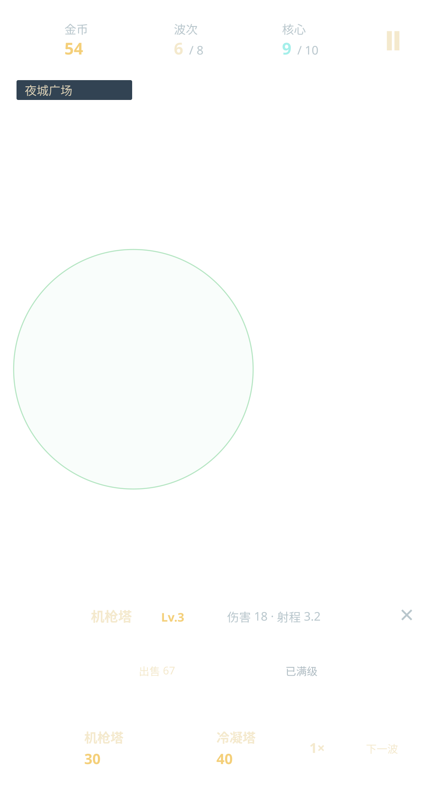

金币54

波次6/ 8

核心9/ 10
夜城广场

机枪塔 Lv.3
伤害 18 · 射程 3.2
暂停预览

原稿为独立 SVG 设计文件，不是运行截图。本页战场为静态构图，不是试玩入口。
战斗UI及既有页面已接入Cocos；全页面设计与实际截图见上方索引。视觉仍待确认，未宣称首关完成。
伤害 18 · 射程 3.2

原稿为独立 SVG 设计文件，不是运行截图。本页战场为静态构图，不是试玩入口。
战斗UI及既有页面已接入Cocos；全页面设计与实际截图见上方索引。视觉仍待确认，未宣称首关完成。